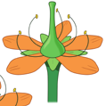
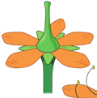
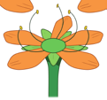
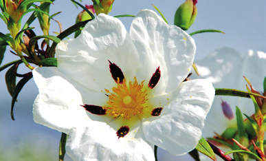
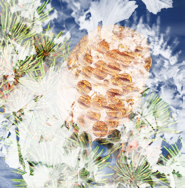

Las características de las plantas gimnospermas son:
La parte femenina de la flor está formada por los pétalos.
Las plantas que florecen presentan una variedad de colores, formas y tamaños.
Los órganos reproductores son el estambre y el pistilo.
Las gimnospermas se caracterizan por tener semillas expuestas.
Las plantas que pertenecen a este grupo son:
Las gimnospermas son plantas que producen semillas.
Las gimnospermas son un grupo de plantas que se caracterizan por tener semillas desnudas.